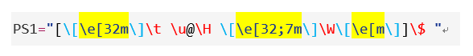

自定义 prompt 样式
条评论
自定义 Bash Prompt 时，作用域分为 仅当前用户 和全部用户
实现
仅当前用户有效
编辑~/.bashrc，并在该行 # User specific aliases and functions 以下添加以下内容：
1 | export PS1="[\[\e[32m\]\t \u@\H \[\e[32;7m\]\W\[\e[m\]]\$" |
然后执行以下命令即可生效：
1 | source ~/.bashrc |
全部用户有效
编辑/etc/bashrc，注释掉默认设置并添加以下内容：
1 | # ["$PS1" = "\\s-\\v\\\$"] && PS1="[\u@\h \w]\\$" |
然后执行以下命令即可生效：
1 | source /etc/bashrc |
原理和背景知识
文章一开头图片里那玩意儿英文定义叫 prompt，中文翻译是 提示符 ，或者具体点叫 终端提示符。
Bash 有四个可以定制的 prompt:
PS1是在每个命令前都显示的主要 prompt，大部分用户都是定制这个值。PS2命令需要输入时的第二 prompt(比如多行命令).PS3不常用，Bash 的内置select显示交互菜单时使用. 和其它 prompt 不一样，它不扩展 Bash escape sequences. 通常在使用包含select的脚本时会需要定制此 prompt。PS4也不常用，在调试bash脚本时显示缩进级别。第一个字符的重复次数表示缩进级别。
所有 prompt 都可以通过设置变量到需要的数值进行定义(通常在 ~/.bashrc), 例如：
1 | export PS2='>' |
但常用的就只有 PS1，这里也只谈 PS1。
查看环境变量 PS1 默认值的命令：
1 | echo $PS1 |
语法

双引号之间的便是 prompt 的语法控制了，其又分为多个部分，已用不同颜色标注，这里挨个儿来讲：
标黄部分
颜色 / 效果控制代码，语法为：
1 | \e[{F}{(;)B}m |
\e 固定写法，e 不区分大小写。
{F} 表前景色（取值范围参考文末附录，下同），即字体颜色；({;B}) 表后景色或后景效果，后景色即通常所说的背景色。圆括号表选填，不填后景色时默认后景颜色为无色、后景效果为 OFF，也就是没效果。前后景色书写顺序不区分先后，以分号隔开即可。
m 固定写法。
具体解释：
第 1 段 \e[32m 表示字体颜色为绿色，作用域起始于该段代码之后，结束于下一段同类代码之前。
第 2 段 \e[32;7m 表示字体颜色为绿色，后景效果为 反白显示。作用域起始于该段代码之后，结束于下一段同类代码之前。
注意：关于作用域，如果这里第 1 段和第 2 段反过来，即新第 1 段为 \e[32;7m，新第 2 段为 \e[32m 的话，新第 2 段的 32 只会结束新第 1 段的 7，但不会结束新第 1 段的 32，即 前后景色的作用域控制是各自独立的，需要分别控制。
第 3 段 \e[m 是颜色 / 效果控制代码结束符。注意如果没这个的话，输入的命令也会被第 2 段的颜色 / 效果控制代码作用。
红字蓝字部分
Shell 转义字符序列，具体解释如下：
\[标志着一个或多个非打印字符的开始。这被用来嵌入非打印的控制字符，这些字符以某种方式来操作终端仿真器，比方说移动光标或者是更改文本颜色\]标志着非打印字符序列结束\t表示 24 小时格式的时间，如：HH:MM:SS\u表示当前用户的账号名称\H表示完整的主机名称，如：ubuntu.ubuntu.com\W表示当前工作目录名\$root 用户时显示一个$字符，普通用户时显示为一个#字符
更多 Shell 转义字符序列参考下文附录
其它部分
剩下的都好说，全部 原样输出，比如中括号、at 符、空格
附录
- 前后景色 颜色控制代码 取值范围（注意同一颜色在前后景色中的代码不同）
| 前景 | 后景 | 颜色 |
|---|---|---|
| 30 | 40 | 黑色 |
| 31 | 41 | 红色 |
| 32 | 42 | 绿色 |
| 33 | 43 | 黄色 |
| 34 | 44 | 蓝色 |
| 35 | 45 | 紫红色 |
| 36 | 46 | 青蓝色 |
| 37 | 47 | 白色 |
- 后景色 效果控制代码 取值范围
| 代码 | 意义 |
|---|---|
| 0 | OFF |
| 1 | 高亮显示 |
| 4 | underline |
| 5 | 闪烁 |
| 7 | 反白显示 |
| 8 | 不可见 |
- Shell 转义字符序列
| 字符 | 意义 |
|---|---|
| \a | 以 ASCII 格式编码的铃声. 当遇到这个转义序列时, 计算机会发出嗡嗡的响声； |
| \d | 以日，月，天格式来表示当前日期。例如，“Mon May 26”； |
| \h | 本地机的主机名，但不带末尾的域名； |
| \H | 完整的主机名； |
| \j | 运行在当前 shell 会话中的工作数； |
| \l | 当前终端设备名； |
| \n | 一个换行符； |
| \r | 一个回车符； |
| \s | shell 程序名； |
| \t | 以 24 小时制，hours:minutes:seconds 的格式表示当前时间； |
| \T | 以 12 小时制表示当前时间； |
| \@ | 以 12 小时制，AM/PM 格式来表示当前时间，例如“10:51 PM”； |
| \A | 以 24 小时制，hours:minutes 格式表示当前时间； |
| \u | 当前用户名； |
| \v | shell 程序的版本号，例如 4.3； |
| \V | shell 程序的版本号，例如 4.3.11； |
| \w | 当前工作目录名； |
| \W | 当前工作目录名的最后部分； |
| \! | 当前命令的历史号； |
| \# | 当前 shell 会话中的命令数； |
| \$ | 这会显示一个”$”字符，除非你拥有超级用户权限。在那种情况下， 它会显示一个”#”字符； |
| \[ | 标志着一系列一个或多个非打印字符的开始。这被用来嵌入非打印的控制字符，这些字符以某种方式来操作终端仿真器，比方说移动光标或者是更改文本颜色； |
| \] | 标志着非打印字符序列结束； |